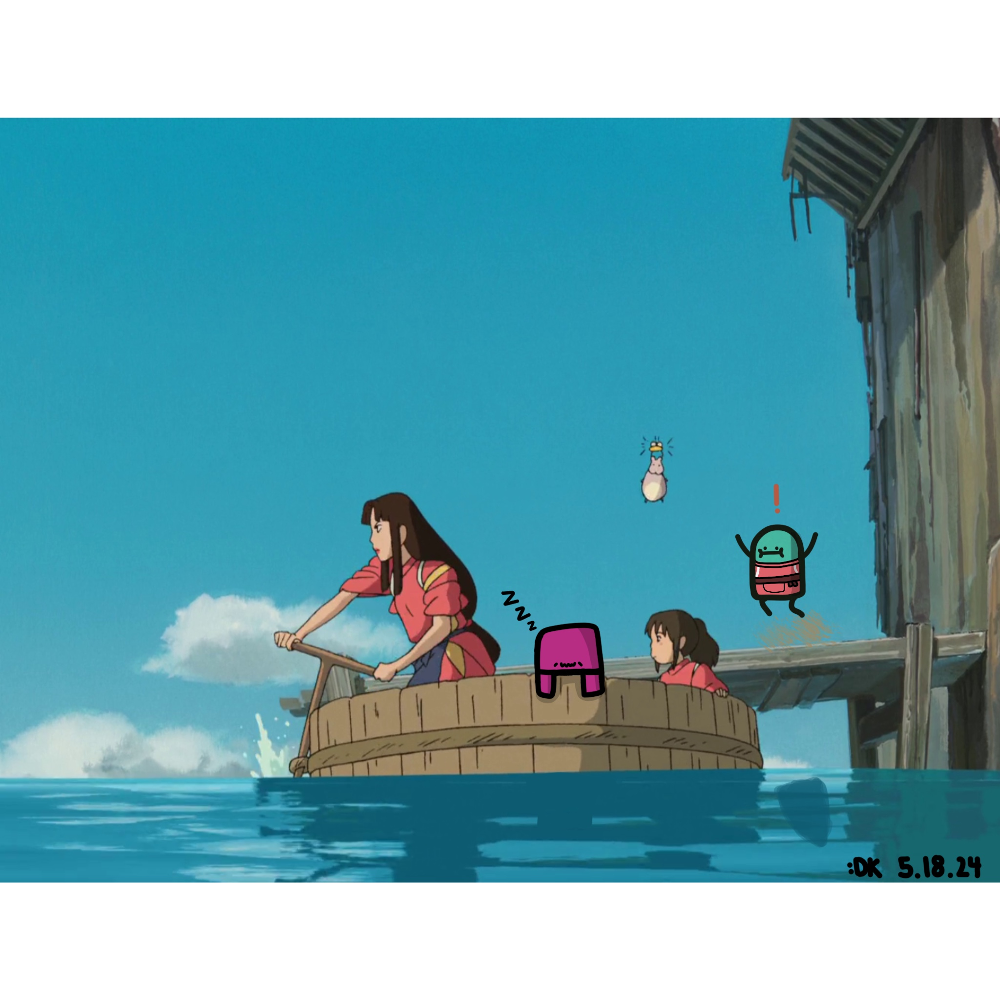
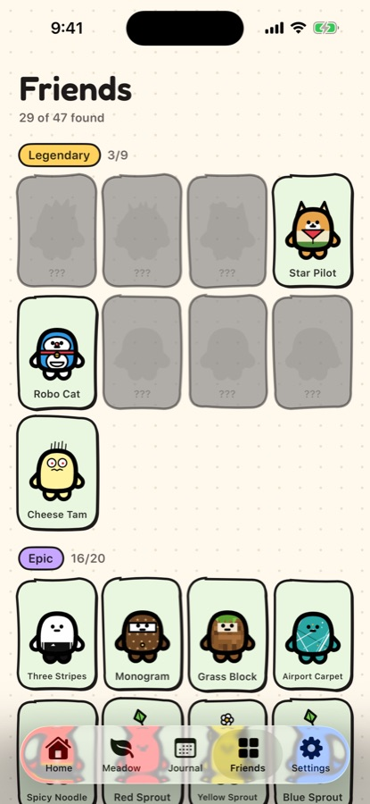

entry #14: grow / chess / million-fish / racerproto
Four things moved this month, so this one is a tour rather than a deep dive. First glhf grow, a daily journal app where each day you write hatches a little character that then wanders around a meadow. It started at the end of October as an iOS app in SwiftUI, with the sprites generated rather than drawn by hand, so a new skin is a few numbers instead of a new file.

November opened with a performance pass on the meadow, the screen doing the most work since every character on it animates at once. Lookups happen once per change rather than once per frame, every sprite shares one timeline instead of keeping its own, and phone builds are compiled optimized with the debug menu kept in. On top of that, ambience in every theme by day and night, a hand mode for dragging characters around, medals that pop up beside each racer as they finish, and an end-to-end encryption proposal for the next phase — the whole point of a journal being that nobody else reads it.

Then a week back on glhf-chess, mostly fixing how it ships. The server half was being deployed by hand through a GUI window, which is why it quietly sat undeployed — a fix built weeks earlier had never reached the environment. It goes out from one menu item now. Batchmode turned out to be a dead end: a headless editor has no Unity Cloud session, so the gateway rejects it outright, and the env-var guard and timeout I had written to support a key that does not exist are cut. A review of the match screen also caught the two player names drifting onto different baselines, because the side to move reads "Player One / to move" while the other is one line.
million fish is a cosy idle fishing game for Steam.
The 2022 prototype got thrown out and kept at a tag, and the whole
thing rebuilt on Unity 6.3. The core is deliberately plain C# with no
engine types in it — one fishing state machine, the mash and reel
minigames, and an economy covering rolls, values, boosts, the ladder
and aquarium capacity — so all of it is testable without the game
running. The economy's numbers live in a json file shared with a
pacing simulation, which means the design document and the game
cannot quietly disagree.
On top of that went the Steam layer: drops after a won fight,
selling, a shiny exchange, achievements and leaderboards, with
permanent item ids derived from the item names so they survive a
catalogue reshuffle. Then multiplayer — a net envelope, sessions, a
mash-off mode and lobby transport over Steam. My favourite commit
renames a placeholder fish from Bluey to Drizzle, on the grounds that
it was a bit close to an existing show.

racerproto is a 3D platformer, and the newest of the
four. It started as a movement prototype, which is the right place to
start for this kind of game: run and skid, a variable jump with apex
hang and a fall multiplier, coyote time, a jump buffer, double jump,
dive and dive-hop, wall slide and wall jump with a same-wall rule,
ledge catch and ceiling corner correction, plus squash, stretch and
dust. Every tuning value sits in one ScriptableObject.
The part I am happiest with is a simulation that predicts jump arcs
and draws them in the editor, with tests asserting the real
controller actually lands where the preview says it will — so the
numbers cannot lie to me while I tune them. After that the
egg replaced the placeholder capsule, which is the
same character family as grow's, with a toon shader, skins and
accessories, dive chaining, two stages, online races, cosmetics and a
griddy emote. And one properly stupid bug: Time.timeScale had
been saved as 0.02 in the project settings, so the whole game had
been running at 2% speed.

A full week on racerproto, almost all of it on how the thing looks and feels rather than how it moves. Online races went in, along with a slide off a run and down a slope, and then the cosmetics took over: three more rounds of skins and accessories, hero helmets worn as hats, a Blue Hero, air poses, capes that sway, a real griddy instead of my placeholder, and two legendaries in Stained Glass and Seraph Wings.

The comfort camera became the default, which it should have been from
the start — the follow camera was doing nobody any favours. A
landing marker went in so you can see where a jump is going to put
you, and the blade kata got reworked twice: once as its own thing,
then again after I made weapons and tools sit nearly level in the
hand whichever way you are facing, which invalidated the grip it had
been built around.
The least glamorous commit is the one I am happiest about: the egg's
design files, the Blender scripts and the notes all moved into the
repo. They had been living on my desktop, which is a great way to
lose them.
racerproto got the piece that makes it something you can invite someone to: online join codes, and a rematch at the end so a race does not die with the lobby. Plus a round Cannonball pose, because it needed one.
The rest went to glhf grow, and specifically to making it legible. Everything that had been an unlabelled icon now says what it is — name tags in the egg picker, captions on the meadow buttons, a key on the calendar, names in rarity-coloured tags on the home screen, doodle chips in the gym — and the grow-ups collapsed into one card instead of several. Colours mean one thing each now rather than whatever was handy, and notifications actually land somewhere when you tap them.

Then the unglamorous half of shipping an app: ads in v1, behind an EEA/UK consent form that appears before the first one, with privacy choices in Settings and a privacy policy written and linked from there. AdMob is wired to the real app id and the real rewarded unit in release builds, which is the sort of thing that is obvious right up until you forget it.